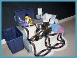
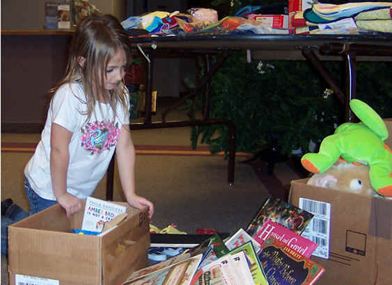

|  | Services |  |
Listed below are the most common services that we offer. If you are in need of any services listed or have questions regarding possible other services please visit our Contact Us page.
Assessment and Referrals: Weekly interviews to apply for financial aid with rent or utilities are conducted. Clients bring proof of household income and expenses. Needs and resources are documented and appropriate referrals are made to resources in our community, including outreach programs from local churches.
Food Pantry: For those who cannot access traditional food banks during open hours. Available on an as-needed basis. Some income limitations.
Clothing Closet: Emergency clothing as-needed. Large distributions three times per year. Professional closet for job interview clothing. Men’s clothing for labor jobs. Children’s clothing.
Bridge Kits: Bridge Kits contain pots/pans, dishes, utensils, towels, comforter and sheets, and basic cleaning supplies. These are available to graduating foster students and domestic violence victims who are starting over.
Household: Some basic household items available to low-income families.
The Esther Project: Serves the “non-traditional” domestic violence victim. (a person abused by someone other than an intimate partner.) With Referral from a police department or domestic violence services agency, victims receive three nights in a motel, up to $25 groceries and up to $25 for transportation. Client must be working with a domestic violence advocate for safety planning beyond the three day mark. Clothing also available as needed.
Holidays: Thanksgiving and Christmas food boxes are distributed to low-income families. Pre-registration is required. (Watch local newspaper for announcement.) Gifts and toys are distributed at Christmas time.